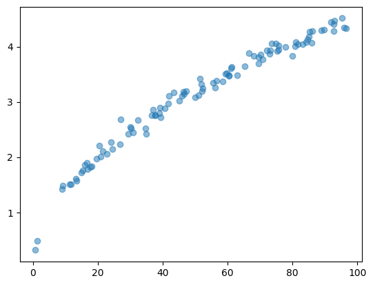
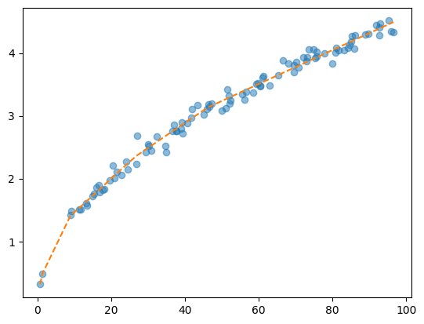

2025-04-17
통계학이란 답이없는 세상에서 답을 내려주는 학문이라 생각합니다. (최규빈)
- 정답을 연구하는 학문 vs 해법을 연구하는 학문
- 통계학은 해법을 연구하는 학문에 가까움
- 통계학은 자연과학이지만 공학적인 느낌도 가지고 있음.
- 대수학교육에 대한 리처드파인만에 생각
- 핵심아이디어
- 질문: 높이 \(h=30,50,70\) 에서 공을 떨어뜨리면 몇 초만에 땅으로 떨어질까요?
- 답변1: 물리학에는 \[h = \frac{1}{2}gt^2\]
이라는 공식이 있거든요? 위의식에서 \(h=10,20,30\)를 넣고 대응하는 \(t\)를 계산합니다.
- 질문: 높이 \(h=30,50,70\) 에서 공을 떨어뜨리면 몇 초만에 땅으로 떨어질까요?
- 답변2: 통계학과 학생이라면..
통계학과 저학년
제가 이거 알아볼려고 되게 많이 실험해봤거든요? 다양한 높이에서 떨어뜨린 점들이 아래와 같습니다.
패턴을 보니까 대충 30에서는 2.5초정도 나오겠네요..
통계학과 고학년
제가 저 데이터로 딥러닝 모형을 돌려봤거든요 
예측값은 2.4901 입니다.
:::
Note
아래에는 당신이 조직생활에서 겪을 수 있는 상황들과 그러한 상황들에서 당신이 취할 수 있는 행동들이 제시되어 있습니다. 각각의 상황들을 자세히 읽고, 당신이 생각하기에 각 대안적 행동들이 얼마나 바람직한지 다음의 보기와 같이 답해 주시기 바랍니다.
예) 옆자리에 근무하는 동료가 업무 시간에 자꾸 잠잠을 잔다
전혀 바람직하지 않다 ① ② ③ ④ ⑤ ⑥ ⑦ 매우 바람직하다
당신이 위에 제시된 상황에서 동료에게 업무 시간에 잠잠을 걸지 말라고 주의를 주는 것이 ’바람직하다’고 생각되면 물론 ⑦번 방향으로, ’바람직하지 않다’면 ①번 방향으로 답하시면 됩니다. 예시한 ⑤의 경우는 ’매우 바람직하지는 않지만 약간은 바람직한 대응 행동’이라고 판단한 경우입니다. (각 상황마다 주어진 대안 행동 모두에 응답하여야만 하고, 한 문항도 빠짐없이 응답하여야 합니다.)
Note
【상황1】 여자친구와 보고 싶어하던 연극 티켓 2장을 간신히 구했다. 막상 출발하려는데, 갑자기 중요한 프로젝트가 생겨서 팀원 전원의 야근을 해야 한다. 당신은 어떻게 하겠습니까?
전혀 바람직하지 않다 ① ② ③ ④ ⑤ ⑥ ⑦ 매우 바람직하다
A. 팀장님께 양해를 구하고 보러간다. ① ② ③ ④ ⑤ ⑥ ⑦
B. 여자친구에게 표를 주고 다른 사람과 가라고 한다. ① ② ③ ④ ⑤ ⑥ ⑦
C. 표를 환불하고 다른 날로 예매한다. ① ② ③ ④ ⑤ ⑥ ⑦
D. 연극을 보고 돌아와 남들보다 더 늦게까지 일한다. ① ② ③ ④ ⑤ ⑥ ⑦
E. 여자친구와 잠깐 만나 연극 대신 저녁을 먹는다. ① ② ③ ④ ⑤ ⑥ ⑦
F. 옆 팀 동료에게 표를 판다. ① ② ③ ④ ⑤ ⑥ ⑦
G. 여자친구에게 미안하다고 말하고 일에 전념한다. ① ② ③ ④ ⑤ ⑥ ⑦